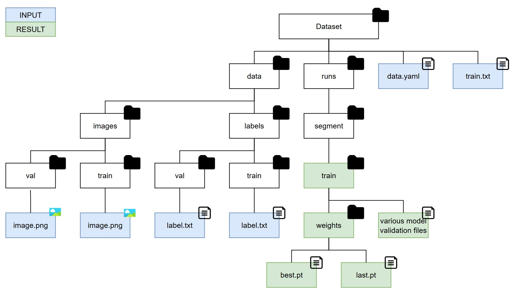
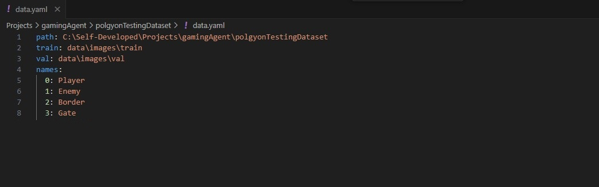
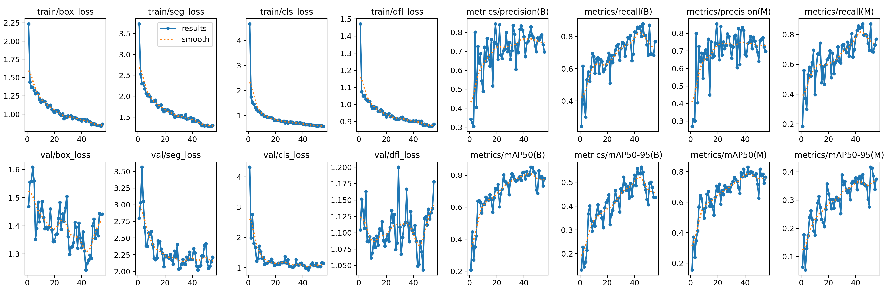

Project 7: AI-Powered Gaming Agent
Segementation (Proof of Concept)
Background
After successfully implementing player detection using YOLOv8's real-time object detection capabilities, the next step is to explore segmentation techniques to achieve more precise detection. Since segmentation offers a finer level of detail compared to bounding boxes, it will be crucial for accurately identifying complex objects such as enemies and gates. This proof of concept (PoC) aims to introduce additional labels (for gates and enemies) while leveraging segmentation to enhance detection accuracy. The objective is to assess YOLOv8's segmentation capabilities, gain a deeper understanding of the process, and evaluate its potential. The goal of this PoC is to:
- Detecting the player, enemies and gates within the game screen in real-time.
- Projecting the detections live in a separate screen (live feedback for evaluation).
- Evaluating the accuracy and precision of the model.
- Gain insights into Segementation modeling.
Step 1 - Testing Data
The same testing data as for the object detection PoC will be used.
Step 2 - Label Testdata and export in YOLO 1.1 format
All labeling has been done with CVAT.ai. All 200 screenshots have been labeled for segmentation. The dataset has been downloaded in the format YOLO 1.1 segmentation.
Step 3 - Model Training
Before starting the YOLOv8 training, it's essential to organize the training data correctly. The data organization as well as model training steps are differnt to object recognition as seen during Step 2. All training images should be placed in the data/images/train folder, while validation images should be stored in the data/images/val folder. Similarly, the corresponding label files must be organized under the data/labels/train and data/labels/val directories. Next, it's important to update the .yaml configuration file to ensure it points to the correct data locations and verify that the train.txt file is accurate and up to date. Once the training process is completed, all relevant model data will be stored in the runs/segment/train directory. The trained model files can be found within the weights subfolder, while evaluation metrics and analysis reports will be available in the main train folder. Each segmentation training run generates a new train folder within the segment directory, ensuring that results from different runs are kept separate. We will not include a separate test set, which would typically require additional test folders similar to the train and val directories, as we will evaluate the model's performance directly within the game environment. The overall folder structure is as follows:
The .yaml file serves as the primary configuration file for the dataset. It specifies the paths to the main dataset directory, as well as the locations of the training and validation folders that contain both images and labels. Additionally, it defines the class names used for labeling the data. The train.txt file, on the other hand, contains a list of image file names that should be used during the training process. Each entry in the file corresponds to an image that will be fed into the model, ensuring the correct data is utilized for training.
The python script below trains a YOLOv8 small segmentation model using the specified dataset, optimizing for real-time tracking performance. The training process as shown in the screnshot below runs for 100 epochs with a batch size of 8 and an image size of 640x640 pixels. It utilizes GPU acceleration (device='0') for faster computation and employs data augmentation to improve model robustness. The training process includes early stopping if no improvement is observed after 10 epochs and saves the results, including the trained model weights, for further evaluation.
CUDA (Compute Unified Device Architecture) has been utilized to enable GPU acceleration for the machine learning process involved in training the YOLOv8 segmentation model. Developed by NVIDIA, CUDA is a parallel computing platform and programming model that empowers developers to harness the full potential of NVIDIA GPUs, significantly enhancing the performance of compute-intensive applications.
from ultralytics import YOLO
if __name__ == '__main__':
#load YOLOv8 small segmentation model
model = YOLO('yolov8s-seg.pt') # yolov8s-seg.pt as segmentation model -> best balance for real-time tracking
#train the model with specific parameters
results = model.train(
data=r'C:\Self-Developed\Projects\gamingAgent\polgyonTestingDataset\data.yaml',
epochs=100,
imgsz=640,
batch=8,
workers=4,
device='0', #GPU (0) or CPU (-1)
save=True,
patience=10,
augment=True
)
#print training results
print("Training completed. Check results directory for details.")
This video shows how the epoches are trained (4x speed):
Step 4 - Validate the trained model
Once the training is complete, the trained model, along with a comprehensive analysis of its performance, will be stored in the train folder. This includes essential evaluation metrics, logs, and other relevant data that provide insights into the model's effectiveness and accuracy.
The evaulation shows that the model was well trained and increasingly became better at predicting the player position correctly. Note that I kept the validation set very small with only 5 out of the 200 screenshots as I wanted to keep the training dataset high. This may explain the val/box_loss and val/dfl_loss values.
| Validation Metric | Explanation | Interpretation |
|---|---|---|
| train/box_loss | Measures how well the model predicts object bounding boxes during training. | A decreasing trend indicates improving localization accuracy. |
| train/seg_loss | Measures the accuracy of segmentation mask predictions during training. | A steady decline means the model is learning to better outline objects. |
| train/cls_loss | Evaluates how well the model classifies objects during training. | A decreasing trend suggests improved classification accuracy. |
| train/dfl_loss | Assesses the model's distribution-focused localization quality. | A downward trend indicates better bounding box regression. |
| metrics/precision(B) | Represents the proportion of correctly identified objects among detections. | Increasing values suggest reduced false positives. |
| metrics/recall(B) | Indicates the proportion of actual objects that were successfully detected. | A rising trend shows improved detection coverage. |
| metrics/precision(M) | Measures the segmentation model’s ability to correctly identify objects. | A higher precision indicates fewer false positives in mask predictions. |
| metrics/recall(M) | Shows how many actual objects the model successfully segmented. | Improved recall means better object detection coverage. |
| val/box_loss | Measures how well the model predicts bounding boxes during validation. | A decreasing trend indicates improved generalization. |
| val/seg_loss | Evaluates segmentation mask quality on validation data. | A downward trend suggests improved segmentation performance. |
| val/cls_loss | Indicates classification performance on validation data. | A decreasing trend shows better object categorization. |
| val/dfl_loss | Measures distribution-based localization accuracy during validation. | A lower loss indicates better box predictions. |
| metrics/mAP50(B) | Evaluates detection performance at an IoU threshold of 50% for bounding boxes. | An increasing trend indicates better model performance. |
| metrics/mAP50-95(B) | Measures detection accuracy across multiple IoU thresholds (50% to 95%). | A rising trend suggests improved robustness across IoU levels. |
| metrics/mAP50(M) | Evaluates segmentation performance at an IoU threshold of 50%. | A higher value indicates better segmentation accuracy. |
| metrics/mAP50-95(M) | Measures segmentation accuracy across a range of IoU thresholds. | An upward trend suggests improved segmentation performance. |
Step 5 - Using the trained model
The results achieved were impressive, especially considering the small dataset used (around 200 screenshots). While the labeling process prioritized speed over precision, refining the annotations could further enhance model performance. Overall, YOLOv8 segmentation has proven to be an excellent choice for generating input data for the reinforcement learning agent, offering a strong balance of speed and accuracy.
You can find the code used below. It takes screenshots from the game window. gets them processed by the trained model and shows the results in a second window on the processed images (grey-scaled and edge detected):
import cv2
import mss
import numpy as np
from ultralytics import YOLO
#load the trained YOLO segmentation model
model_path = r"C:\Self-Developed\Projects\gamingAgent\polgyonTestingDataset\runs\segment\train8\weights\best.pt"
model = YOLO(model_path)
#define the screen capture area
monitor = {
"top": 0,
"left": 0,
"width": 1280,
"height": 1024
}
#class-to-color mapping (adjust class IDs accordingly)
CLASS_COLORS = {
0: (0, 255, 0), # Green for player (class ID 0)
1: (0, 0, 255), # Red for enemies (class ID 1)
2: (255, 255, 255), # Red for enemies (class ID 1)
3: (255, 0, 0) # Blue for gates (class ID 2)
}
def preprocess_image_for_model(frame):
#convert to grayscale
gray = cv2.cvtColor(frame, cv2.COLOR_BGR2GRAY)
#apply edge detection (adjust thresholds)
edges = cv2.Canny(gray, 100, 200)
#convert grayscale edge image to 3-channel format for YOLO input
edges_3channel = cv2.cvtColor(edges, cv2.COLOR_GRAY2BGR)
return edges_3channel
def detect_and_display():
with mss.mss() as sct:
while True:
#capture the game screen
screenshot = sct.grab(monitor)
original_frame = np.array(screenshot)
original_frame = cv2.cvtColor(original_frame, cv2.COLOR_BGRA2BGR)
#process frame for model (grayscale + edge detection)
processed_frame = preprocess_image_for_model(original_frame)
#run segmentation detection with confidence threshold 0.3
results = model(processed_frame, conf=0.3)
for result in results:
if result.masks is not None:
for mask, conf, cls in zip(result.masks.xy, result.boxes.conf, result.boxes.cls):
mask = np.array(mask, dtype=np.int32)
class_id = int(cls)
color = CLASS_COLORS.get(class_id, (255, 255, 255)) #default to white if class not found
#draw mask on the processed frame
cv2.polylines(processed_frame, [mask], isClosed=True, color=color, thickness=2)
cv2.fillPoly(processed_frame, [mask], color + (80,)) # Add transparency
#draw labels on the processed frame
x, y = mask[0][0], mask[0][1] # Use first polygon point for label position
label = f"{model.names[class_id]}: {conf:.2f}"
cv2.putText(processed_frame, label, (int(x), int(y - 10)),
cv2.FONT_HERSHEY_SIMPLEX, 0.6, color, 2)
#resize for display (matching detection script style)
resized_frame = cv2.resize(processed_frame, (1280, 1024))
cv2.imshow("Edge-Detected Segmentation Overlay", resized_frame)
#press 'q' to exit
if cv2.waitKey(1) & 0xFF == ord('q'):
break
cv2.destroyAllWindows()
#start the real-time segmentation detection and display
detect_and_display()
To enable the AI agent to steer the player effectively, it requires one additional piece of information which is the game's boundaries. Therefore, I had to revisit the labeling process and incorporate the borders before training the CNN again:
Note: You may have noticed that I ignored the multipliers. The reason for this is that I decided to not incorporate those in a first stage for trainig the RL Agent. Multipliers will be collected automatically alongside playing the game. Focusing on collecting them would increase the complexity while my goal is to keep it as simple as possible to the first RL Agent instance.